ActD Ajouter une tache à une activité
UMLActivity
Untitled
::
Tache
::
ActD Ajouter une tache à une activité
Description
none
Diagrams

Ajouter une tache à une activité
Groups
Utilisateur
SI
BDD
Edges
(InitialNode1→Id du Tache)
(Id du Tache→Demander les détails de la tache)
(Demander les détails de la tache→Envoyer les détails de la tache)
(Envoyer les détails de la tache→Afficher les détails de la tache)
(Afficher les détails de la tache→Définir la tache sur une activité)
(Définir la tache sur une activité→Envoyer l'ajout)
(Envoyer l'ajout→Enregister la modification)
(Enregister la modification→Afficher une message de accomplissement)
(Afficher une message de accomplissement→ActivityFinalNode1)
Properties
Name
Value
name
ActD Ajouter une tache à une activité
stereotype
null
visibility
public
isReentrant
true
isReadOnly
false
isSingleExecution
false
Owned Elements
Ajouter une tache à une activité